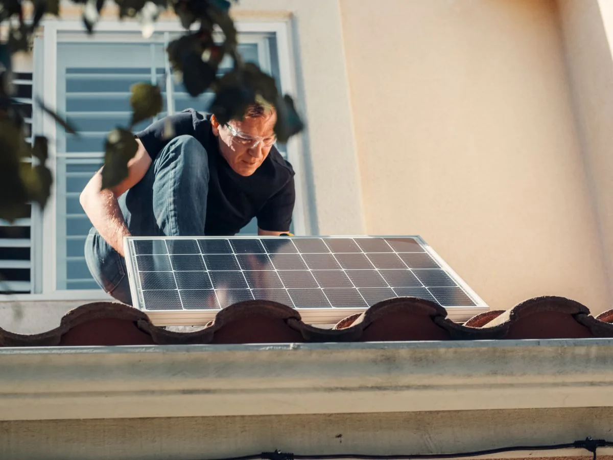
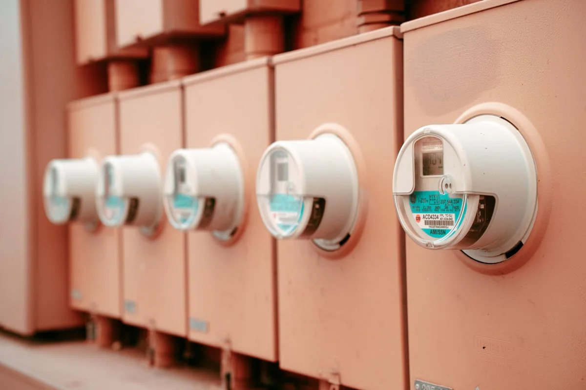
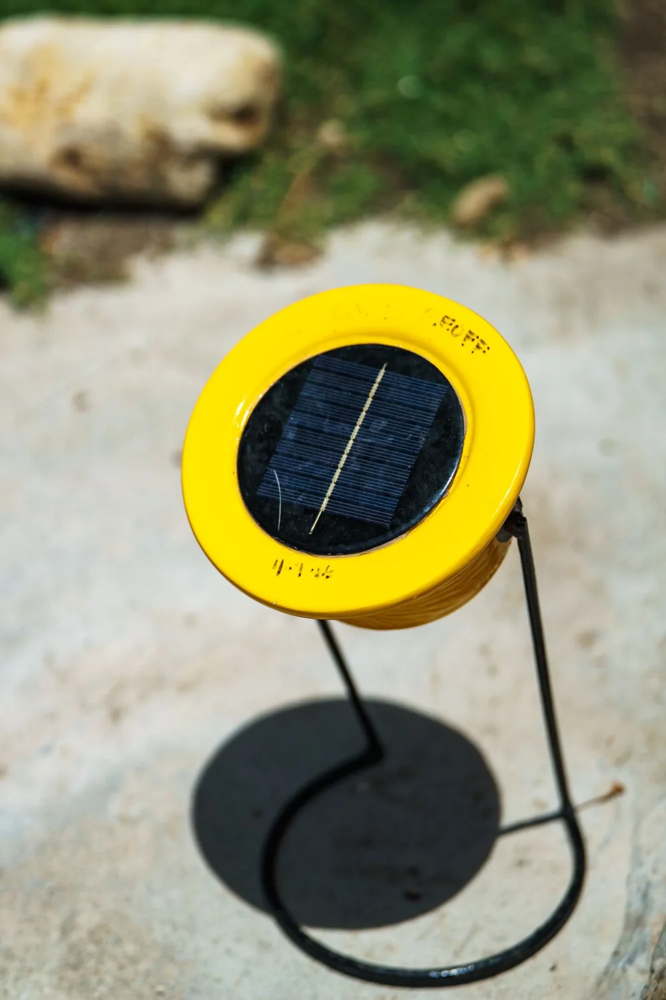

Instalação completa
Projeto, estrutura, painéis e inversor. Você acompanha cada etapa e recebe a orientação de uso.
Quero instalar →Modelo MOSS Digital · Marca fictícia · fotografias de banco ilustrativas · Conheça a MOSS ↗
☀ Instalação, manutenção e suporte
Sol do Bairro é um modelo de site para instaladoras de energia solar. O visitante simula a economia, conhece os serviços e pede uma proposta pelo WhatsApp.
Cada etapa é feita por gente que conhece telhado, rede elétrica e a rotina de quem precisa usar o sol todos os dias.

Projeto, estrutura, painéis e inversor. Você acompanha cada etapa e recebe a orientação de uso.
Quero instalar →
Limpeza, revisão elétrica e acompanhamento da geração. Atendimento para o seu sistema, não para o vizinho.
Quero suporte →
Acompanhe a geração do celular e saiba quando algo saiu do esperado, antes de receber uma conta alta.
Quero acompanhar →Serviços demonstrativos. O valor real é apresentado na proposta, após a análise do telhado.
Ajuste os dois valores da sua conta de luz. O cálculo é feito aqui no navegador, com estimativas explicadas — nada é enviado e nada é gravado.
Estimativa para orientação. Não é proposta, não é garantia de economia e não substitui a análise técnica do telhado.
Você manda a conta de luz e conta onde fica a instalação.
Avaliamos telhado, rede elétrica, sombreamento e padrão de consumo.
Você recebe o projeto, o investimento, o prazo e a garantia, por escrito.
Instalamos, testamos com você e passamos a monitorar a geração.
Esta é uma demonstração com bairros fictícios. No site real, informe apenas as regiões que você realmente atende, para não prometer viagem que não existe.
Fora da área, a instalação é orçada caso a caso, com o deslocamento descrito na proposta.
8 fotografias
Fotografias de banco selecionadas pelo assunto. Não são instalações da marca fictícia, nem antes e depois de um serviço real.
Descreva a instalação e a gente responde com os próximos passos, o que precisa ser enviado e o prazo de cada etapa.
Se você rodou o simulador, os números podem ir junto na mensagem. Nada é enviado sozinho: você confere e toca em enviar.
Não. O resultado depende do seu consumo, do sol na sua região, do sombreamento e da tarifa da sua distribuidora. Por isso o simulador é uma estimativa e a proposta vem depois da análise técnica do telhado.
Depende do tamanho do sistema, da condição do telhado e da fila da distribuidora para a ligação. O prazo aparece na proposta, junto com as etapas que dependem de terceiros.
A avaliação técnica dirá. Em telhado que precisa de reparo antes, o caminho é resolver o telhado e depois instalar. Isso é conversado na visita, sem custo.
Os equipamentos têm garantia do fabricante e o serviço tem prazo de garantia próprio, informado por escrito na proposta. Os termos dependem do que for contratado.
Não. Sol do Bairro é uma marca fictícia criada para demonstrar este site. As fotos são de banco e ilustram painéis, instalações e equipamentos. Em um projeto real, podem ser substituídas por fotos autorizadas do serviço.
A vitrine e o simulador funcionam sem banco. A integração opcional com Supabase carrega os serviços publicados e oferece um painel autenticado para o responsável registrar as propostas recebidas pelo WhatsApp. A instalação está explicada no manual.